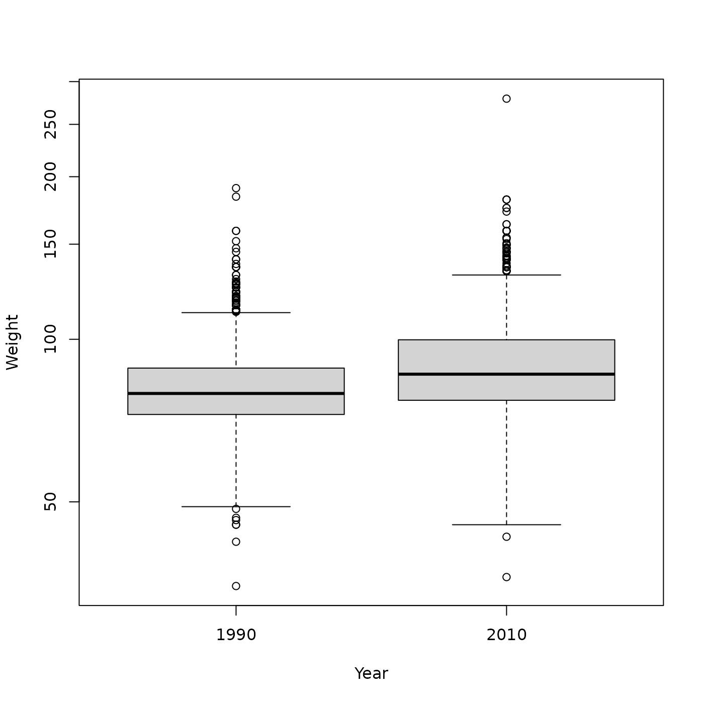
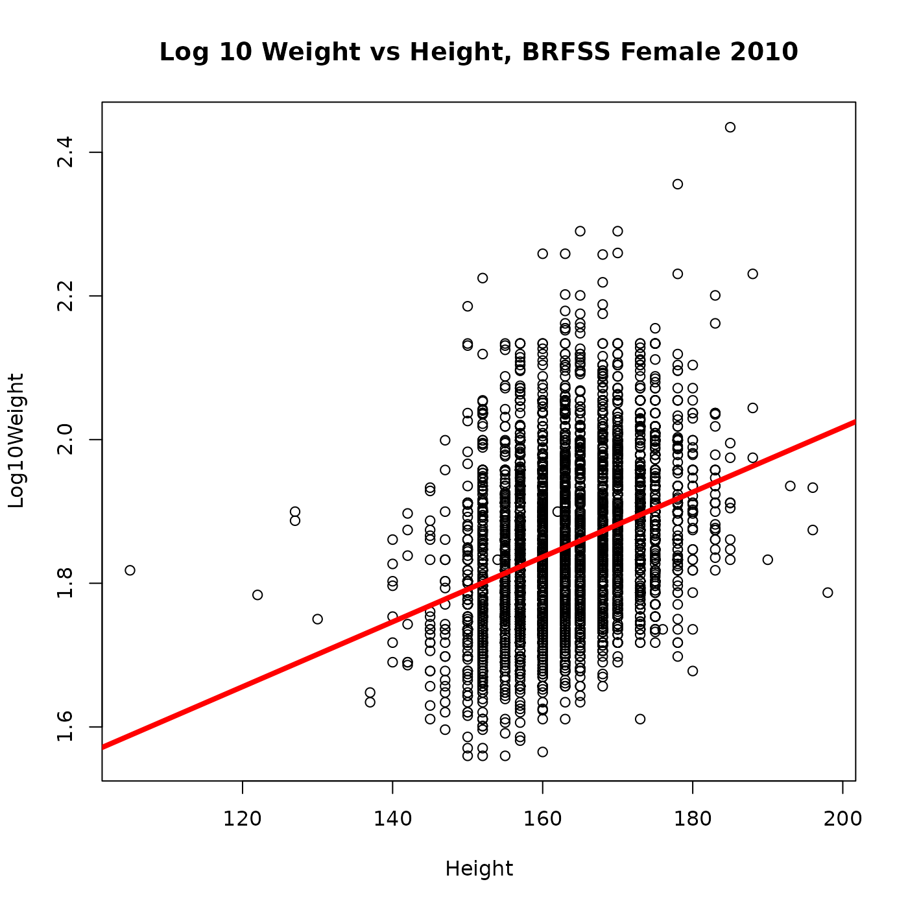
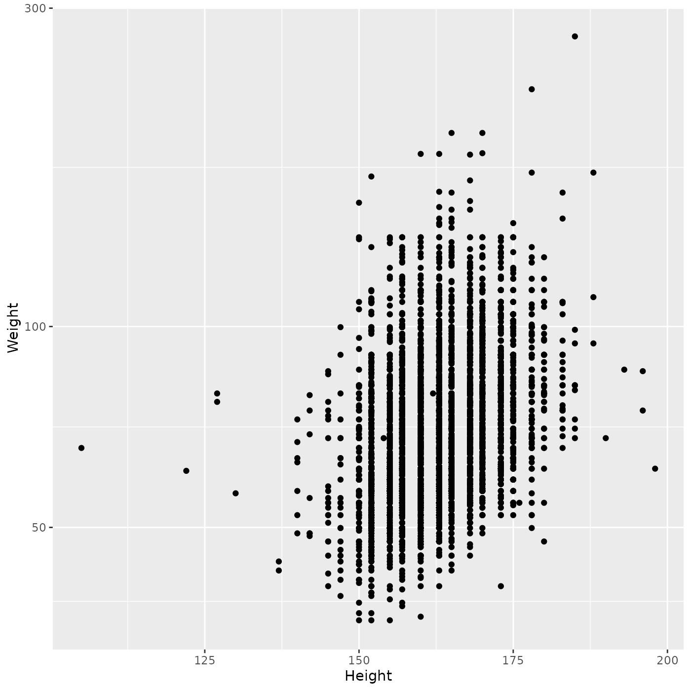
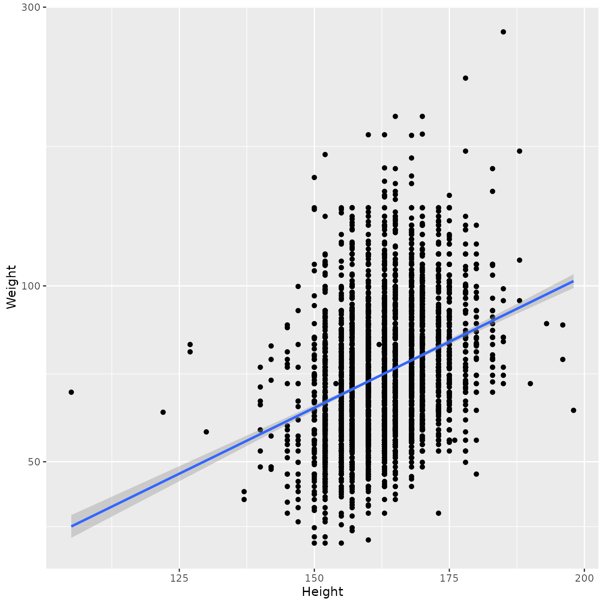
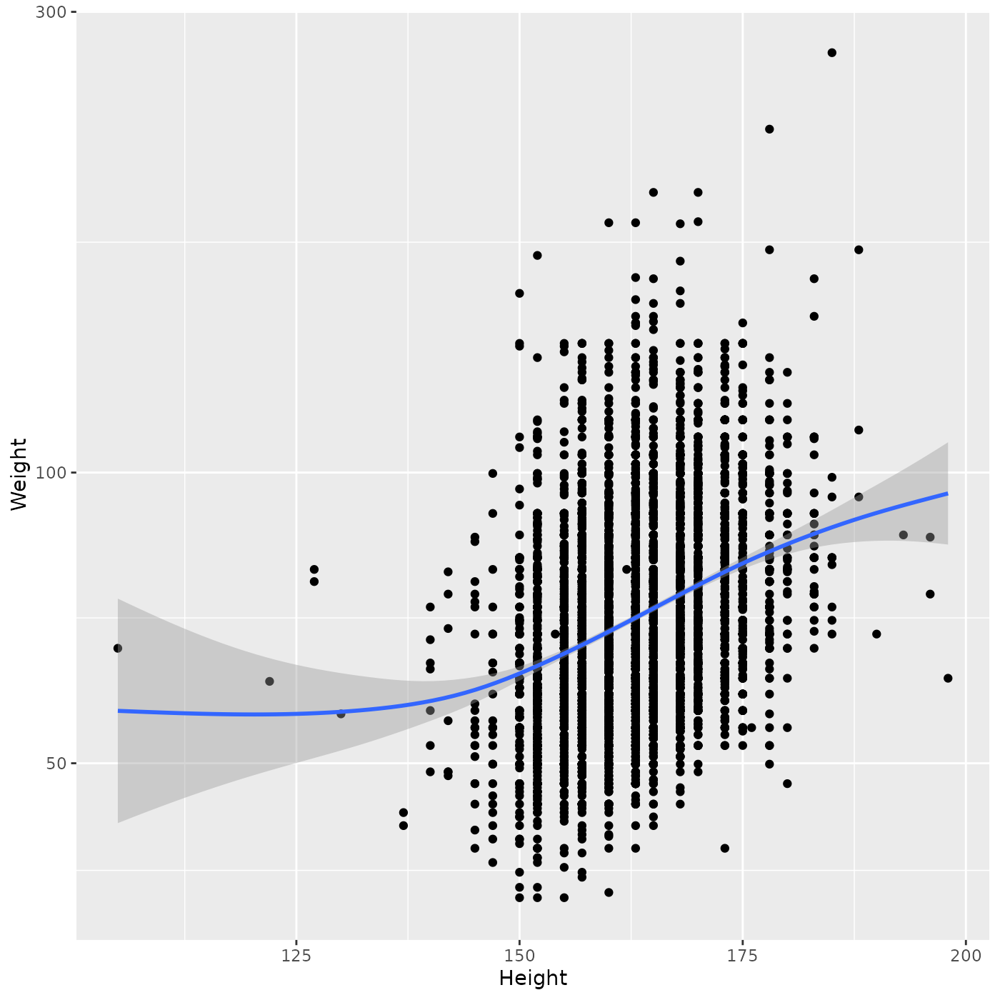

Statistical Analysis and Additional Visualization
Source:vignettes/c_visualization.Rmd
c_visualization.RmdRecap: BRFSS data input
Download (if necessary) and input the data from day 2 using readr
url <- "https://raw.githubusercontent.com/mtmorgan/BERD/main/inst/extdata/BRFSS-subset.csv"
destination <- file.path("data", basename(url))
if (!file.exists(destination)) {
dir.create("data")
download.file(url, destination)
}
brfss <- readr::read_csv(destination)
#> Rows: 20000 Columns: 5
#> ── Column specification ────────────────────────────────────────────────────────
#> Delimiter: ","
#> chr (1): Sex
#> dbl (4): Age, Weight, Height, Year
#>
#> ℹ Use `spec()` to retrieve the full column specification for this data.
#> ℹ Specify the column types or set `show_col_types = FALSE` to quiet this message.Attach the dplyr package and perform the same initial data transformations, and create subsets of data.
library(dplyr)
#>
#> Attaching package: 'dplyr'
#> The following objects are masked from 'package:stats':
#>
#> filter, lag
#> The following objects are masked from 'package:base':
#>
#> intersect, setdiff, setequal, union
brfss_clean <-
brfss |>
mutate(
Year = factor(Year, levels = c("1990", "2010")),
Sex = factor(Sex, levels = c("Female", "Male")),
Log10Weight = log10(Weight)
)
brfss_male <-
brfss_clean |>
filter(Sex == "Male")
brfss_female_2010 <-
brfss_clean |>
filter(Sex == "Female", Year == "2010")Statistical analysis
t-test
We saw that Males in 2010 seemed to be heavier than Males in 1990
brfss_male |>
group_by(Year) |>
summarize(
n = n(),
ave_wt = mean(Weight, na.rm = TRUE),
ave_log10_wt = mean(Log10Weight, na.rm = TRUE)
)
#> # A tibble: 2 × 4
#> Year n ave_wt ave_log10_wt
#> <fct> <int> <dbl> <dbl>
#> 1 1990 4282 81.2 1.90
#> 2 2010 3679 88.8 1.94
plot(Weight ~ Year, brfss_male, log = "y")
But is this difference statistically significant? Answer this using a t-test to compare the mean of two groups.
Start by consulting the help page ?t.test with ‘Usage’
labeled “S3 method for class ‘formula’”. Use the
Log10Weight column so that we are comparing log-transformed
Weight.
t.test(Log10Weight ~ Year, brfss_male)
#>
#> Welch Two Sample t-test
#>
#> data: Log10Weight by Year
#> t = -20.202, df = 6985.4, p-value < 2.2e-16
#> alternative hypothesis: true difference in means between group 1990 and group 2010 is not equal to 0
#> 95 percent confidence interval:
#> -0.03971348 -0.03268805
#> sample estimates:
#> mean in group 1990 mean in group 2010
#> 1.903711 1.939912The p-value displayed here is < 2.2e-16, so
we are very confident that Males in 2010 are heavier than males
in 1990.
The ‘sample estimates’ agree with the values we calculated using
group_by() and summarize(); this provides us
with some confidence that we have not done something very wrong.
Note that t.test() actually returns an object
that we can capture and manipulate, e.g., to obtain a vector of group
mean estimates.
t_test <- t.test(Log10Weight ~ Year, brfss_male)
t_test$estimate
#> mean in group 1990 mean in group 2010
#> 1.903711 1.939912Linear regression
It seems like there was a positive relationship between Height and (log 10) Weight in Females in 2010.
plot(Weight ~ Height, brfss_female_2010, log = "y")Fitting a linear regression in R is a two-step process
- Use
lm()to fit the linear model - Use
summary()oranova()to assess the statistical significance of the fitted model.
Start by fitting the model, using notation like that used to plot the
data; use Log10Weight so the fit is to the log-transformed
data.
fit <- lm(Log10Weight ~ Height, brfss_female_2010)
fit
#>
#> Call:
#> lm(formula = Log10Weight ~ Height, data = brfss_female_2010)
#>
#> Coefficients:
#> (Intercept) Height
#> 1.114139 0.004515The fit object doesn’t initially seem very useful – it
tells us what we did, and summarizes the intercept (1.1141389) and slope
(0.0045155), but does not provide an ANOVA table or other summary about
whether the fit is statistically significant.
Use anova() to obtain an ANOVA table summarizing the
fit.
anova(fit)
#> Analysis of Variance Table
#>
#> Response: Log10Weight
#> Df Sum Sq Mean Sq F value Pr(>F)
#> Height 1 6.330 6.3304 709.98 < 2.2e-16 ***
#> Residuals 5929 52.865 0.0089
#> ---
#> Signif. codes: 0 '***' 0.001 '**' 0.01 '*' 0.05 '.' 0.1 ' ' 1The table indicates that there is a highly significant relationship
(Pr(>F) is < 2.2e-16) between Weight and
Height. summary() provides the ANOVA table and additional
information
summary(fit)
#>
#> Call:
#> lm(formula = Log10Weight ~ Height, data = brfss_female_2010)
#>
#> Residuals:
#> Min 1Q Median 3Q Max
#> -0.28440 -0.06600 -0.01124 0.05810 0.48532
#>
#> Coefficients:
#> Estimate Std. Error t value Pr(>|t|)
#> (Intercept) 1.1141389 0.0276899 40.24 <2e-16 ***
#> Height 0.0045155 0.0001695 26.65 <2e-16 ***
#> ---
#> Signif. codes: 0 '***' 0.001 '**' 0.01 '*' 0.05 '.' 0.1 ' ' 1
#>
#> Residual standard error: 0.09443 on 5929 degrees of freedom
#> (390 observations deleted due to missingness)
#> Multiple R-squared: 0.1069, Adjusted R-squared: 0.1068
#> F-statistic: 710 on 1 and 5929 DF, p-value: < 2.2e-16e.g., showing that about 10% (‘Adjusted R-squared’) of the variation in log 10 Weight is explaind by Height. There are likely many other factors contributing to Weight variation.
To visualize the linear regression, plot the data points and then use
abline() to add the regression line; we also add a ‘main’
title to the plot.
plot(
Log10Weight ~ Height, brfss_female_2010,
main = "Log 10 Weight vs Height, BRFSS Female 2010"
)
abline(fit, col = "red", lwd = 4) # red color, 4x default line width
Additional analysis and visualization
Let’s use the ggplot2 package to perform additional analysis and visualization
ggplot2
implements a ‘grammar of graphics’. The author of the package has
provided a unique way to create plots – start with a
ggplot() graph, and then add aes()thetics
(what will be plotted) and geom()etries (how to plot the
aesthetics), and additional layers to, e.g., transform the y-axis to a
log scale.
ggplot(brfss_female_2010) +
aes(x = Height, y = Weight) +
geom_point() +
scale_y_log10()
#> Warning: Removed 390 rows containing missing values or values outside the scale range
#> (`geom_point()`).
Add a linear regression using
geom_smooth(method = "lm")
ggplot(brfss_female_2010) +
aes(x = Height, y = Weight) +
geom_point() +
geom_smooth(method = "lm") +
scale_y_log10()
#> `geom_smooth()` using formula = 'y ~ x'
#> Warning: Removed 390 rows containing non-finite outside the scale range
#> (`stat_smooth()`).
#> Warning: Removed 390 rows containing missing values or values outside the scale range
#> (`geom_point()`).
Note that the fitted regression includes confidence bands, which can be very helpful when trying to interpret the fit.
Let’s not specify a ‘method’ for geom_smooth(), letting
ggplot2 use
it’s default method…
ggplot(brfss_female_2010) +
aes(x = Height, y = Weight) +
geom_point() +
geom_smooth() +
scale_y_log10()
#> `geom_smooth()` using method = 'gam' and formula = 'y ~ s(x, bs = "cs")'
#> Warning: Removed 390 rows containing non-finite outside the scale range
#> (`stat_smooth()`).
#> Warning: Removed 390 rows containing missing values or values outside the scale range
#> (`geom_point()`).
ggplot2 has chosen to use a ‘generalized additive model’ that fits a smoothed curve. This makes fewer a priori assumptions about the relationship between Weight and Height, and in particular suggests that (a) the linear relationship is appropriate for the central part of the data, but at the extremes of Height and (b) there is considerable uncertainty at the extremes of Height. This approach is very appropriate in early stages of exploratory analysis, where one is still trying to understand data without making additional or unnecessary assumptions.
Session information
sessionInfo()
#> R version 4.3.3 (2024-02-29)
#> Platform: x86_64-pc-linux-gnu (64-bit)
#> Running under: Ubuntu 22.04.4 LTS
#>
#> Matrix products: default
#> BLAS: /usr/lib/x86_64-linux-gnu/openblas-pthread/libblas.so.3
#> LAPACK: /usr/lib/x86_64-linux-gnu/openblas-pthread/libopenblasp-r0.3.20.so; LAPACK version 3.10.0
#>
#> locale:
#> [1] LC_CTYPE=C.UTF-8 LC_NUMERIC=C LC_TIME=C.UTF-8
#> [4] LC_COLLATE=C.UTF-8 LC_MONETARY=C.UTF-8 LC_MESSAGES=C.UTF-8
#> [7] LC_PAPER=C.UTF-8 LC_NAME=C LC_ADDRESS=C
#> [10] LC_TELEPHONE=C LC_MEASUREMENT=C.UTF-8 LC_IDENTIFICATION=C
#>
#> time zone: UTC
#> tzcode source: system (glibc)
#>
#> attached base packages:
#> [1] stats graphics grDevices utils datasets methods base
#>
#> other attached packages:
#> [1] ggplot2_3.5.0 dplyr_1.1.4
#>
#> loaded via a namespace (and not attached):
#> [1] sass_0.4.9 utf8_1.2.4 generics_0.1.3 lattice_0.22-5
#> [5] hms_1.1.3 digest_0.6.35 magrittr_2.0.3 evaluate_0.23
#> [9] grid_4.3.3 fastmap_1.1.1 Matrix_1.6-5 jsonlite_1.8.8
#> [13] mgcv_1.9-1 purrr_1.0.2 fansi_1.0.6 scales_1.3.0
#> [17] textshaping_0.3.7 jquerylib_0.1.4 cli_3.6.2 rlang_1.1.3
#> [21] crayon_1.5.2 splines_4.3.3 bit64_4.0.5 munsell_0.5.0
#> [25] withr_3.0.0 cachem_1.0.8 yaml_2.3.8 tools_4.3.3
#> [29] parallel_4.3.3 tzdb_0.4.0 memoise_2.0.1 colorspace_2.1-0
#> [33] vctrs_0.6.5 R6_2.5.1 lifecycle_1.0.4 fs_1.6.3
#> [37] bit_4.0.5 vroom_1.6.5 ragg_1.3.0 pkgconfig_2.0.3
#> [41] desc_1.4.3 pkgdown_2.0.7 pillar_1.9.0 bslib_0.6.1
#> [45] gtable_0.3.4 glue_1.7.0 systemfonts_1.0.6 xfun_0.42
#> [49] tibble_3.2.1 tidyselect_1.2.1 highr_0.10 knitr_1.45
#> [53] farver_2.1.1 nlme_3.1-164 htmltools_0.5.7 rmarkdown_2.26
#> [57] labeling_0.4.3 readr_2.1.5 compiler_4.3.3